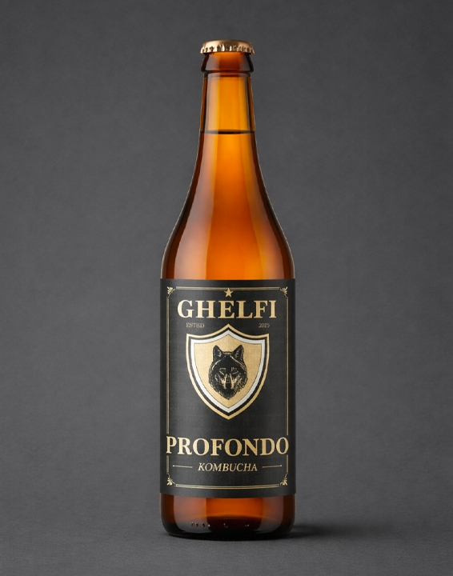

PROFONDO
Più lento. Più denso.
Profondo nasce quando la fermentazione viene lasciata andare oltre la soglia dell’essenziale. La materia si raccoglie, si stratifica, si amplia. Il risultato è un profilo più scuro, più lento, più disteso, costruito sulla persistenza.

Quando la fermentazione si approfondisce
Profondo non nasce da una materia diversa, ma da una scelta di tempo. Laddove Origine ricerca tensione e precisione, qui la fermentazione prosegue più a lungo e accompagna il profilo verso una dimensione più ampia.
Il risultato è una lettura più stratificata del tè nero: meno luminosa, più raccolta, con una presenza gustativa più estesa e una sensazione di maggiore densità al palato.
Non cerca immediatezza. Cerca durata, profondità, permanenza.
La stessa origine, una diversa estensione
Una base tannica nobile, capace di sostenere un tempo di fermentazione più lungo senza perdere coerenza e precisione.
Pulito, essenziale, pensato per accompagnare il processo senza introdurre deviazioni aromatiche.
Una presenza silenziosa che lascia emergere la relazione tra materia prima e coltura viva.
Il nucleo attivo del processo: struttura, trasformazione, estensione aromatica e profondità gustativa.
Note sensoriali
Una materia che si distende e acquista profondità senza perdere definizione.
Il fermento lavora in profondità e accompagna il tè verso una maggiore complessità.
Non domina il sorso: lo sostiene e ne prolunga il movimento.
Una chiusura più ampia, meno verticale, costruita sulla permanenza.
Una fermentazione più estesa
Profondo è una bevanda analcolica naturalmente frizzante ottenuta attraverso fermentazione lenta e seconda fermentazione controllata in bottiglia.
Il tempo supplementare modifica la percezione complessiva del profilo: la pressione resta fine, il perlage continuo, ma la struttura si fa più ampia, più matura, più avvolgente.
Prodotto vivo, non filtrato
L’eventuale presenza di sedimenti naturali testimonia la vitalità del fermento madre. In Profondo, questa presenza accompagna una lettura ancora più piena della fermentazione.
Conservazione e apertura
Conservare in frigorifero a temperatura ≤ 3°C.
Non agitare. Capovolgere delicatamente prima dell’apertura.
Servire ben fredda, preferibilmente in calice.